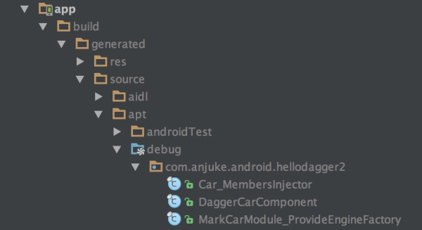

前面啰里啰嗦的介绍了Dagger2的基本使用，接下来我们再分析分析实现原理。这里不会分析Dagger2根据注解生成各种代码的原理，关于Java注解以后有机会再写一篇文章来介绍。后面主要分析的是Dagger2生成的各种类如何帮我们实现依赖注入，为了便于理解我这里选了前面相对简单的案例B来做分析。
Dagger2编译期生成的代码位于build/generated/source/apt/debug/your package name/下面:

首先我们看看Dagger2依据依赖提供方MarkCarModule生成的对应工厂类MarkCarModule_ProvideEngineFactory。为了方便大家理解对比，后面我一律会把自己写的类和Dagger2生成的类一并放出来。
/**
* 我们自己的类
*/
@Module
public class MarkCarModule {
public MarkCarModule(){ }
@Provides Engine provideEngine(){
return new Engine("gear");
}
}
/**
* Dagger2生成的工厂类
*/
public final class MarkCarModule_ProvideEngineFactory implements Factory<Engine> {
private final MarkCarModule module;
public MarkCarModule_ProvideEngineFactory(MarkCarModule module) {
assert module != null;
this.module = module;
}
@Override
public Engine get() {
return Preconditions.checkNotNull(
module.provideEngine(), "Cannot return null from a non-@Nullable @Provides method");
}
public static Factory<Engine> create(MarkCarModule module) {
return new MarkCarModule_ProvideEngineFactory(module);
}
/** Proxies {@link MarkCarModule#provideEngine()}. */
public static Engine proxyProvideEngine(MarkCarModule instance) {
return instance.provideEngine();
}
}
我们可以看到MarkCarModule_ProvideEngineFactory中的get()调用了MarkCarModule的provideEngine()方法来获取我们需要的依赖Engine，MarkCarModule_ProvideEngineFactory的实例化有crate()创建，并且MarkCarModule的实例也是通过create()方法传进来的。那么这个create()一定会在哪里调用的，我们接着往下看。
前面提到@Component是依赖提供方(MarkCarModule)和依赖需求方(Car)之前的桥梁，那我看看Dagger2是如何通过CarComponent将两者联系起来的。
/**
* 我们自己的类
*/
@Component(modules = {MarkCarModule.class})
public interface CarComponent {
void inject(Car car);
}
/**
* Dagger2生成的CarComponent实现类
*/
public final class DaggerCarComponent implements CarComponent {
private Provider<Engine> provideEngineProvider;
private MembersInjector<Car> carMembersInjector;
private DaggerCarComponent(Builder builder) {
assert builder != null;
initialize(builder);
}
public static Builder builder() {
return new Builder();
}
public static CarComponent create() {
return builder().build();
}
@SuppressWarnings("unchecked")
private void initialize(final Builder builder) {
this.provideEngineProvider = MarkCarModule_ProvideEngineFactory.create(builder.markCarModule);
this.carMembersInjector = Car_MembersInjector.create(provideEngineProvider);
}
@Override
public void inject(Car car) {
carMembersInjector.injectMembers(car);
}
public static final class Builder {
private MarkCarModule markCarModule;
private Builder() {}
public CarComponent build() {
if (markCarModule == null) {
this.markCarModule = new MarkCarModule();
}
return new DaggerCarComponent(this);
}
public Builder markCarModule(MarkCarModule markCarModule) {
this.markCarModule = Preconditions.checkNotNull(markCarModule);
return this;
}
}
}
通过上面的代码我们看到Dagger2依据CarComponent接口生成了实现类DaggerCarComponent（没错这正是我们在Car的构造函数中使用DaggerCarComponent）。DaggerCarComponent在build的时候实例化了DaggerCarComponent对象，并首先调用MarkCarModule_ProvideEngineFactory.create(builder.markCarModule)始化了provideEngineProvider变量，接着调用Car_MembersInjector.create(provideEngineProvider)初始化了carMembersInjector变量。当我们手动在Car类的构造函数中调用inject(Car car)方法时会执行carMembersInjector.injectMembers(car)。所以接下来我们要看看Car_MembersInjector的实现。
public final class Car_MembersInjector implements MembersInjector<Car> {
private final Provider<Engine> engineProvider;
public Car_MembersInjector(Provider<Engine> engineProvider) {
assert engineProvider != null;
this.engineProvider = engineProvider;
}
public static MembersInjector<Car> create(Provider<Engine> engineProvider) {
return new Car_MembersInjector(engineProvider);
}
@Override
public void injectMembers(Car instance) {
if (instance == null) {
throw new NullPointerException("Cannot inject members into a null reference");
}
instance.engine = engineProvider.get();
}
public static void injectEngine(Car instance, Provider<Engine> engineProvider) {
instance.engine = engineProvider.get();
}
}
Car_MembersInjector中的create()用于实例化自己，这个方法前面我们看到是在DaggerCarComponent中调用的。injectMembers(Car instance)将engineProvider.get()的返回值赋给了依赖需求方Car的engine变量，而engineProvider.get()正是本节一开始我们提到的MarkCarModule_ProvideEngineFactory中的get()方法。至此整个依赖注入的流程就完成了。更复杂的应用场景会生成更加复杂的代码，但原理都和前面分析的大同小异。
总结
这篇文章只是通过一些简单的例子介绍了Dagger2的相关概念及使用，实际项目中的应用远比这里的例子要复杂。关于Dagger2在实际项目中的应用可以参照这个开源项目
BaronZ88/MinimalistWeather（项目采用MVP架构，其中View层和Presenter层的解耦就是通过Dagger2来实现的）。
MinimalistWeather是一款开源天气App，开发此项目主要是为展示各种开源库的使用方式以及Android项目的架构方案，并作为团队开发规范的一部分。项目中每一个字母、每一个命名、每一行代码都是经过仔细考究的；但是由于时间精力有限，项目UI未做严格要求。本着精益求精、提供更好开源项目和更美天气应用的原则，因此期望有兴趣的开发和UED同学可以一起来完成这个项目。